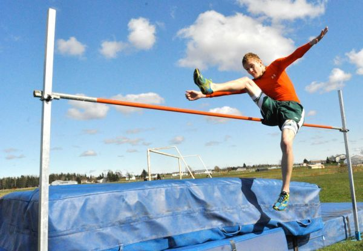
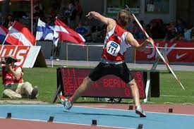

High Jump
The high jump is a field event in which competitors must jump unaided over a horizontal bar placed at measured heights without dislodging it. The two main considerations are the lift and clearance.
Safety Instructions
- Ensure proper spacing during drills and practice.
- Wear appropriate physical education attire during the activity.
- Follow the teacher's instructions during practice.
- Ensure the runway is free from obstacles.
- Use a flat ground.
- Jump one learner at a time.
- Perform warm-up adequately before participating in the activity.
Warm-up Activities
-
Jumping Jacks
Stand with your legs shoulder-width apart, knees slightly bent, and hands on the sides. Jump and open your arms and legs out to the sides, with arms above the head and legs wider than shoulder-width. Close your arms and legs back to your sides, returning to the start. Repeat several times.
-
Skip and Skip
Move while stepping from one foot to the other with a hop. Raise your arm opposite the moving foot alternatively.
-
Press-ups
Place your hands on the ground face down, extend your legs back, and balance on your hands and toes. Keep your body straight, bend your elbows, and lower yourself until your elbows are at a 90-degree angle. Push back up through your hands to the start position.
-
Wind Break
Pretend to be in a windstorm, with wind blowing your arms as branches. Start while the wind is strong and finish as the wind calms.
Facility and Equipment
The facility used in the high jump is a space where a runway is marked. There is a landing area where suitable material for landing is placed, such as sawdust or landing mattresses. The equipment includes a crossbar, uprights, and a tape measure.
Rules for Practice
- Do not touch the ground beyond the plane of the upright and the landing area before the crossbar.
- Take off should be on one foot.
- Do not dislodge the bar to master the take-off points.
Styles of High Jump
- The scissors
- Straddle
- Fosbury flop
- Western roll
Scissor Technique in High Jump
This is a method of clearing the bar in the high jump. It involves the legs making a crossing action over the crossbar during flight. The crisscrossing is what gives the technique its name "scissors."

Learning Points on the Scissor Technique
- The Approach: Approach the bar at a comfortable speed.
- The Take-off: Hold your shoulders high and flex the take-off leg to launch you into the air.
- The Flight: Hold the leg nearer the bar straight and swing it into the air to clear the bar. Once your lead leg is over the bar, kick the other foot to clear the bar.
- Landing: Land on your feet to complete the jump.
Cool-down Activity
- Stretch and Spell
Use body stretches to spell the word "scissor" one letter at a time. Wait for a few seconds before spelling a different letter.
Standing Javelin
The javelin throw is a field event where a spear-shaped implement, about 2.5 meters in length, is thrown.
Equipment and Sector
The javelin has several parts:
- Metal Head: The part with the metal tip.
- Metal Tip: Made of metal, it determines the exact measurement once the javelin has landed.
- Chord Grip: Covers a section of the shaft and is the part held by the thrower.
- The Tail: The part of the javelin that trails it as the implement is thrown.
- The Shaft: Makes the largest part of the javelin. The chord grip is within the shaft.
The javelin throw facility includes a runway, a throwing arc, and a landing sector.

Safety Instructions
- Ensure proper spacing during drills and practice.
- Wear appropriate physical education attire during the activity.
- Follow the teacher's instructions during practice.
- Do not stand in the way of the javelin or where it is landing.
- Carry the implements back after a throw.
- Perform warm-up adequately before participating in the activity.
Warm-up Activities
-
Jumping Jacks
Stand with your legs shoulder-width apart, knees slightly bent, and hands on the sides. Jump and open your arms and legs out to the sides, with arms above the head and legs wider than shoulder-width. Close your arms and legs back to your sides, returning to the start. Repeat several times.
-
Ankle Circles
Stand with feet hip-width apart and your arms to the sides. Shift your weight to the right leg and point your toes down into the ground. Start rotating your left foot, making small circles with your ankles. Repeat the exercise with your right foot.